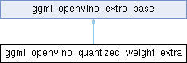

- Generated by
 1.16.1
1.16.1
|
Neura
Gesture and voice-controlled desktop assistant
|

Public Member Functions | |
| ggml_openvino_quantized_weight_extra (ov::Tensor w, ov::Tensor s, ov::Tensor z, std::shared_ptr< ov::Node > n) | |
Public Attributes | |
| ov::Tensor | weights |
| ov::Tensor | scales |
| ov::Tensor | zp |
| std::shared_ptr< ov::Node > | weight_node |
| Public Attributes inherited from ggml_openvino_extra_base | |
| Type | type |
Additional Inherited Members | |
| Public Types inherited from ggml_openvino_extra_base | |
| enum class | Type { WEIGHT , QUANTIZED_WEIGHT , TENSOR } |
| Protected Member Functions inherited from ggml_openvino_extra_base | |
| ggml_openvino_extra_base (Type t) | |